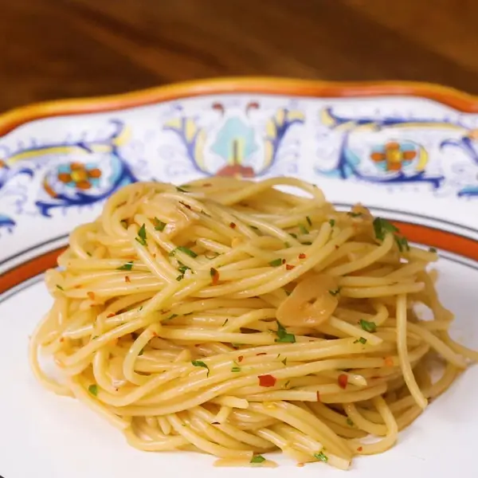

Spaghetti with garlic and oil
Spaghetti made different
Imagine a rainy dark monday evening, you came home after 8 hours of hard labor,
you want something fast and tasteful for dinner ?
These spaghetti will make your evening. :) Enjoy !
Ingredients
for 4 servings
- Salt
- 225g of spaghetti
- 3 tablespoons extra virgin olive oil
- 4 cloves garlic, sliced
- 1 teaspoon red chili flakes
- 12 tablespoons fresh parsley,finely chopped
Preparation
- Bring a large pot of salted water to a boil. Cook the pasta according to package instructions.Save ¼ cup (60 ml) of pasta water, then drain.
- Add the olive oil and garlic to a large cold sauté pan. Turn the heat to medium-low and slowly heat up until the garlic is fragrant and lightly colored, about 3 minutes.
- Add the chile flakes and cook for another minute.
- Add the reserved pasta water and bring to a simmer. Add the cooked spaghetti and parsley, if using. Stir until the pasta is well-coated. Season with salt to taste.